study.viz v0.1.0: the demo app, in a home of its own
study.viz is new. It is the demo app that lived inside safety.viz, copied into its own repository under its own name. safety.viz keeps the charts. study.viz keeps the app that hosts them. This page shows what is particular to study.viz, and the things the app says of a simulated study. The app is walked in full on the safety.viz v1.13.0 demo page.
- study.viz v0.1.0 was released on 28 November 2026, on @jwildfire’s approval of its release candidate. It is the first release of this repository. The stills on this page are of the dev site the candidate was cut from.
- The charts are safety.viz's chart bundle from its dev branch at 75b918cd, named 1.13.0. safety.viz v1.13.0 was released on 28 November 2026; the bundle is that release's.
- Until the release, the app is at jwildfire.github.io/study.viz/dev/. After the release it is at jwildfire.github.io/study.viz/; that address has no page before then.
- Some studies are public data and some are made up; the footer of this page says which. Every simulated study is made by a modified copy of gsm.datasim 2.1.0.
- Nothing in the app is qualified. Its own label reads “Exploratory”: every result should be confirmed.
- The app has its own address and its own name. Its header reads “study.viz”, its browser tab “study.viz demo”, and its footer “study.viz 0.1.0 · safety.viz 1.13.0”.
- It does what the safety.viz demo does. The capture read both apps and found the same tabs, the same 18 charts, the same 7 studies and the same Studies page.
- A simulated study says so: “Simulated” and its snapshot on the chip, “Made by” on its card, the label “Experimental” on its view and on Build a study, and the files the app saves start with “simulated-”.
- No chart's source is in study.viz. The charts are safety.viz's built file, copied byte for byte.
- Every copied file is recorded with a checksum against the safety.viz commit it came from, and a check fails when a file and the record disagree.
- Open the app. Read the name in the header, the title of the browser tab, and the last line of the footer.
- Press the chip that reads “Pilot study” and choose PILOT-PROTOCOL. Read the line under its name, then press the i beside it.
- Press Overview and walk the sections.
- Read section 7 of this page: what is recorded, and what was checked.
The app has its own home and name
In safety.viz the app was one page of the docs site, at demo/. Here the app is the site: it opens at the site's root.

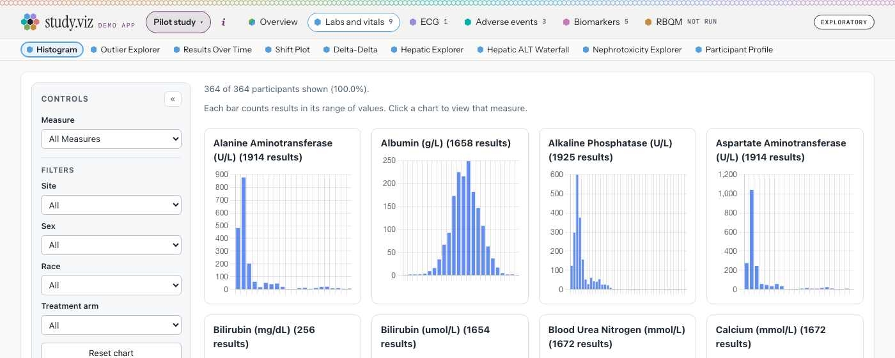
- The wordmark reads study.viz. It is not a link: there is no docs site behind it here.
The browser tab is titled “Histogram · study.viz demo”.

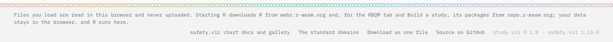
- “study.viz 0.1.0 · safety.viz 1.13.0”: the app's own version, then the name of the chart bundle it carries.
- “safety.viz chart docs and gallery”: the docs are safety.viz's, and the link says so.
Two versions, because two things are here: the app, and the charts it hosts. The bundle is named safety.viz 1.13.0. safety.viz v1.13.0 was released on 28 November 2026; the bundle is that release's.
- Header
- “study.viz”.
- Browser tab
- “Histogram · study.viz demo”: the chart or page, then “study.viz demo”.
- Footer
- “study.viz 0.1.0 · safety.viz 1.13.0”.
- safety.viz chart docs and gallery
- Leads to jwildfire.github.io/safety.viz/. The chart gallery and each chart's own pages stay on safety.viz's site.
- Source on GitHub
- Leads to github.com/jwildfire/study.viz.
- Download as one file
- Leads to a file named
study.viz-app.html. It was not opened here.

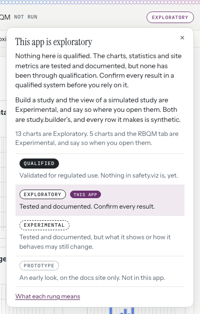
- Under “Qualified”: “Validated for regulated use. Nothing in safety.viz is, yet.” The words come from the chart bundle, so they name safety.viz.
The panel opens from the label that reads “Exploratory”. Its first sentence: “Nothing here is qualified.”

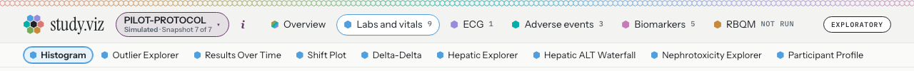
In a window 1,280 pixels wide the header was one row on each of the 7 studies in the list.
- Open the app.The header reads study.viz. The browser tab reads “Histogram · study.viz demo”.
- Scroll to the foot of the page.The last line reads “study.viz 0.1.0 · safety.viz 1.13.0”.
It does what the safety.viz demo does
The capture opened study.viz and the safety.viz demo on safety.viz's dev site, read the same things from each, and compared them. They were the same.
| What was read | In both apps |
|---|---|
| The tabs | Overview, then Labs and vitals 9, ECG 1, Adverse events 3, Biomarkers 5, RBQM |
| The charts under the tabs | 18, with the same names and the same ready marks |
| The studies under the chip | 4 marked DEMO (Pilot study, Renamed columns, Liver cohort, labs only, RBQM study) and 3 marked SIMULATED (READY-P1, READY-P2, PILOT-PROTOCOL) |
| The Studies page | 3 ways to add a study (From your files, Describe a simulated study, From a protocol) and 7 studies listed |
| On the study it opens with | “18 of 18 charts supported by the loaded data” |
| The chart bundle the footer names | safety.viz 1.13.0 |
What differs is the name: the header, the tab title, the footer and its links, as section 1 shows.

The list of studies, with ADD A STUDY and ALL STUDIES under it.

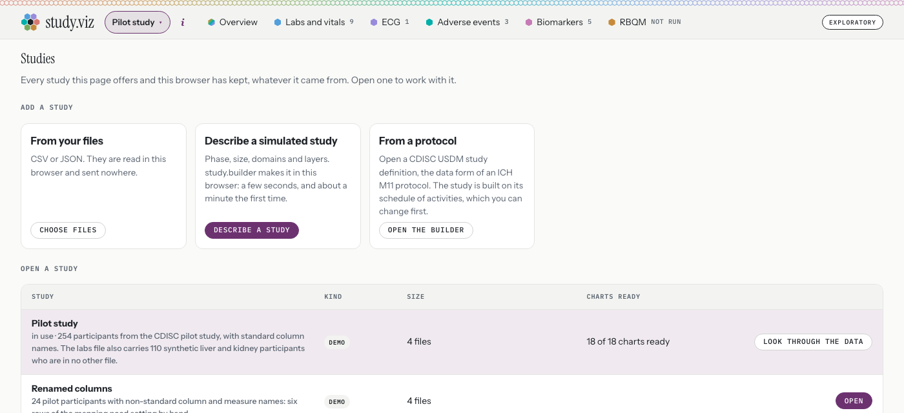
CHOOSE FILES, DESCRIBE A STUDY, OPEN THE BUILDER, then every study.

The Hepatic Explorer. The chart is safety.viz's; study.viz draws it from the copied bundle (section 7).
- A second comparison ran R in both apps. study.viz's
scripts/compare-demos.mjswas run on 28 November 2026 against the two released apps: safety.viz's demo at v1.13.0 and study.viz at v0.1.0. On the Pilot study and on PILOT-PROTOCOL, R ran the same metrics in both apps, and the RBQM tab's site table was the same, cell for cell, at every site. Its table and screenshots are in this page’s comparison folder. - For the chip, the Studies page, the builder, the files and the mapping in detail, see the safety.viz v1.13.0 demo page. Each of its steps works the same here.
- In the app, press the chip.7 studies: 4 demo, 3 simulated.
- Press ALL STUDIES.The Studies page, titled “Studies · study.viz demo” in the browser tab.
A simulated study says so
Choose a simulated study from the chip and the app says what it is, under the study's name and in its card. When a study's file cannot be fetched, the app says that under the chip.

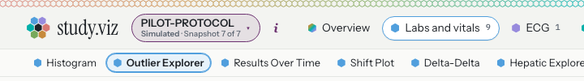
On the Outlier Explorer, the chip reads “PILOT-PROTOCOL” and, under it, “Simulated · Snapshot 7 of 7”. On a demo study there is no second line. Choosing the study kept the tab that was open, and started no R.

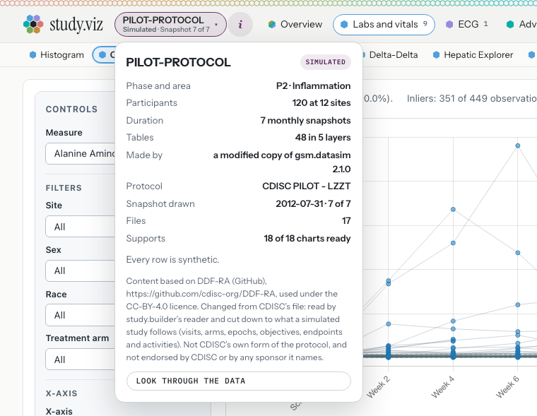
- “Made by”: “a modified copy of gsm.datasim 2.1.0”.
- CDISC’s attribution, because this study follows one of CDISC’s example protocols.
The card says what the study is, which snapshot is drawn, and “Every row is synthetic.”

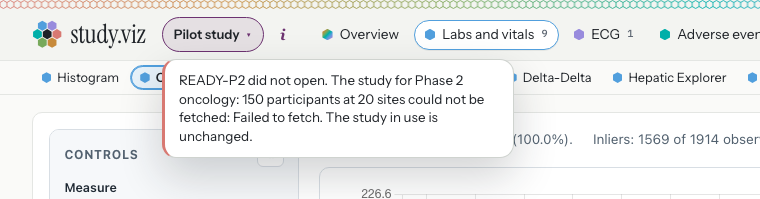
- “READY-P2 did not open. The study for Phase 2 oncology: 150 participants at 20 sites could not be fetched: Failed to fetch. The study in use is unchanged.”
To read this sentence, the capture stopped the file of READY-P2 on its way to the page, as a dropped connection would. The study in use stayed the Pilot study. When the file could be fetched again, READY-P2 opened.
- On a chart tab, choose PILOT-PROTOCOL from the chip.The same chart, now on PILOT-PROTOCOL. Under the name: “Simulated · Snapshot 7 of 7”.
- Press the i beside the chip.“Made by” reads “a modified copy of gsm.datasim 2.1.0”.
A simulated study is shown in sections
For a simulated study the Overview tab is study.builder's study view, from its v0.5.2 release. The views are grouped into sections, and a section with more than one view has a second row of tabs. The view carries the label “Experimental”.

The sections: Overview, Design, Data, One participant, Reporting. The facts in the line: Phase 2, Inflammation, 120 participants, 12 sites, 7 months, Seed 505. This ready-made study opened with no R.

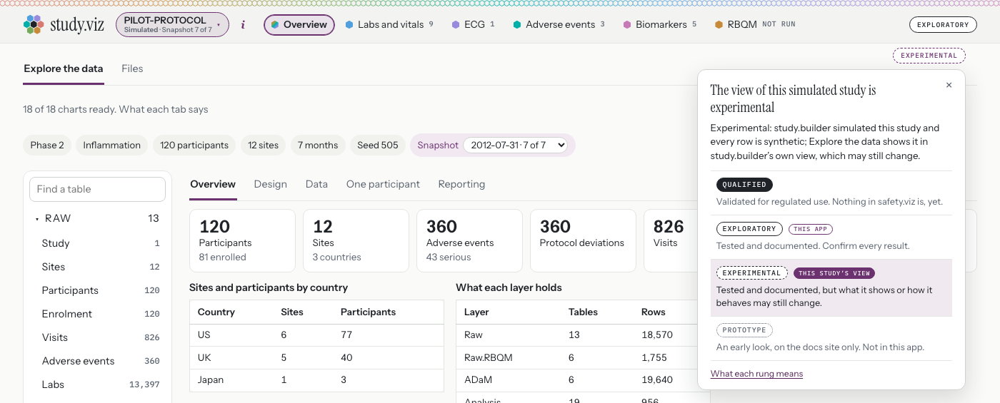
- The label, at the corner of the view.
- Its sentence: “Experimental: study.builder simulated this study and every row is synthetic; Explore the data shows it in study.builder’s own view, which may still change.”
The panel is headed “The view of this simulated study is experimental”.
![The study's notes, opened: Every row is synthetic, made by a modified copy of gsm.datasim 2.1.0: Gilead’s simulator with study designs, study results and a study profile added for study.builder. The additions are not Gilead’s and have not been reviewed by the simulator’s authors. No real participant or site is in it. Phase and therapeutic area shape the study results a little, by the modified copy’s study profile: how often a lab is out of range, which adverse events are commoner, and how many are serious and severe. The sizes are guesses at what is believable, not fitted to data. They do not change how many participants, visits or events a study has.](media/view-notes.png)
- The first note: “Every row is synthetic, made by a modified copy of gsm.datasim 2.1.0: Gilead’s simulator with study designs, study results and a study profile added for study.builder. The additions are not Gilead’s and have not been reviewed by the simulator’s authors. No real participant or site is in it.”
The notes are folded under the Overview section, headed “What a study built here is, and is not”. 13 notes; each of the 7 that names gsm.datasim names the modified copy.

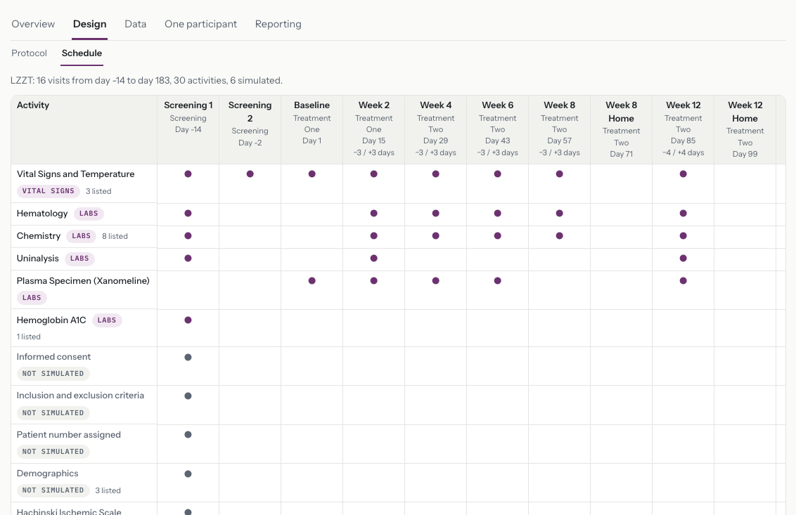
Design has two views, Protocol and Schedule. It appears only when the study followed a protocol.

Data has three views: Pipeline, Tables and Columns.

One participant, followed across every table.

Reporting has two views here: Efficacy and Adverse events.

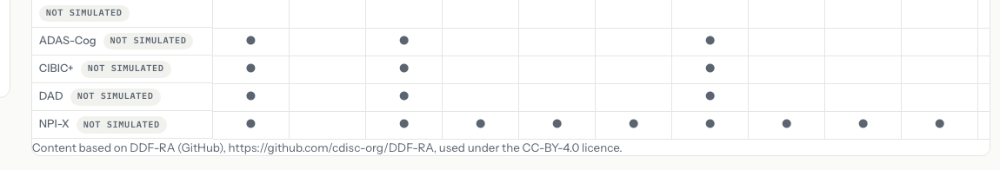
- “Content based on DDF-RA (GitHub), https://github.com/cdisc-org/DDF-RA, used under the CC-BY-4.0 licence.”
CDISC’s attribution, once, under the grid.
- study.builder has RBQM and Safety views of its own. They are left out here. The app’s RBQM tab and its chart tabs show the same study.
- On a window 1,400 wide, each of the five views stayed inside the page: none made it scroll sideways.
- Choose PILOT-PROTOCOL from the chip, then press Overview.The sections are Overview, Design, Data, One participant, Reporting. The label “Experimental” is at the corner.
- Press Design, then Schedule.The protocol’s visits run across the top, its activities down the side, and CDISC’s attribution is under the grid.
A file saved from a simulated study is named so
A simulated study's files carry the standard names, such as adsl.csv. So that a saved file is not taken for a real study's, the app's own download buttons add “simulated-” to the name while a simulated study is in use. The capture pressed each button on the Overview tab's Files face and read the name the browser was offered.
| Button | On Pilot study (demo) | On PILOT-PROTOCOL (simulated) |
|---|---|---|
| Download mapping | study-viz-mapping.json | simulated-study-viz-mapping.json |
| Download CSV, under Details of adsl.csv | adsl.csv | simulated-adsl.csv |
The mapping file is named for study.viz, not safety.viz. The files were not kept. study.builder's own buttons were not pressed: section 8.
A study built with R, then scored on the RBQM tab
One study was built here, small: 24 participants at 3 sites over 3 months. R ran in the browser. The same R then ran the site metrics. Build a study carries the label “Experimental”.

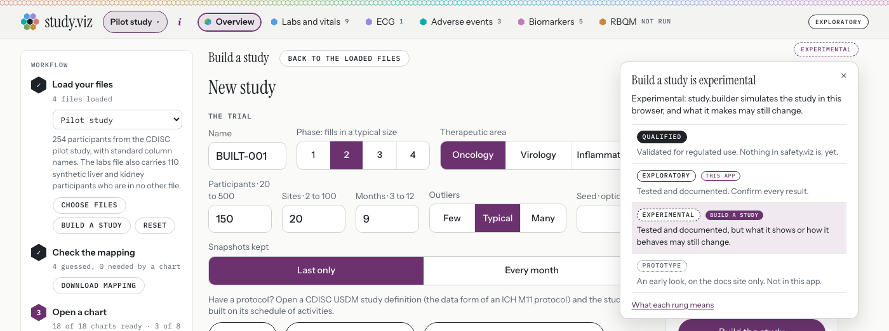
- The label, at the corner of the form.
- Its sentence: “Experimental: study.builder simulates the study in this browser, and what it makes may still change.”
The panel is headed “Build a study is experimental”.

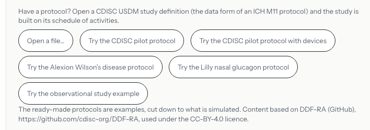
- “The ready-made protocols are examples, cut down to what is simulated. Content based on DDF-RA (GitHub), https://github.com/cdisc-org/DDF-RA, used under the CC-BY-4.0 licence.”
CDISC’s attribution sits inside the builder once, under the 5 example protocols. The form names the simulator too: “Nobody leaves early. Adverse event terms are a short hand-written list in the modified copy of gsm.datasim, not coded with MedDRA.”

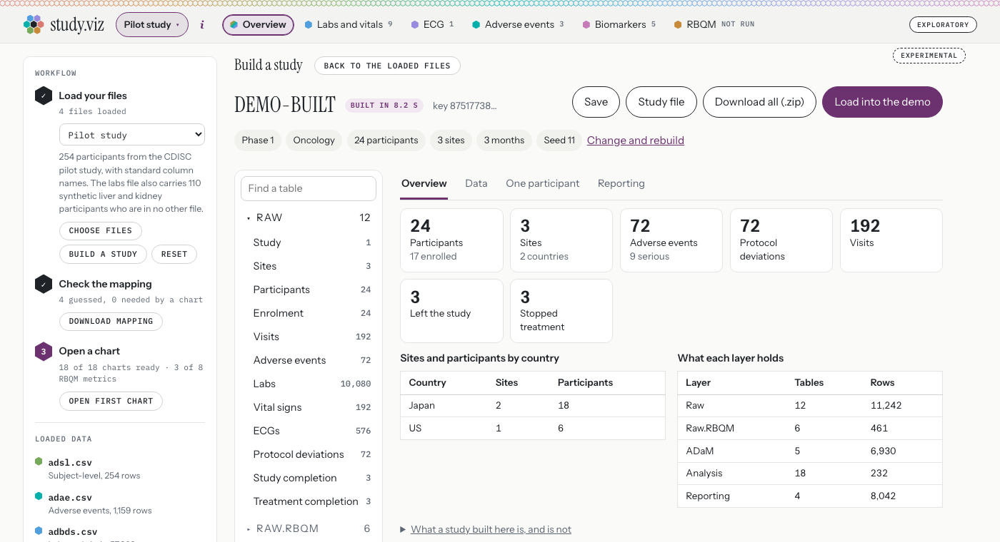
- Load into the demo hands the study to the charts and the RBQM tab.
“Built in 8.2 s”. From pressing Build the study to this screen took 38 seconds on this capture, which includes starting R.

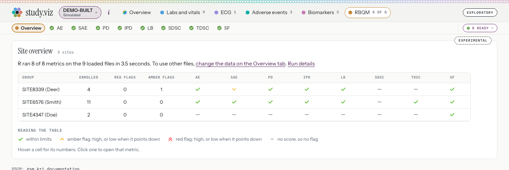
“R ran 8 of 8 metrics on the 9 loaded files in 3.5 seconds.” It took 7 seconds and made 0 requests to R's own host: R was already running.

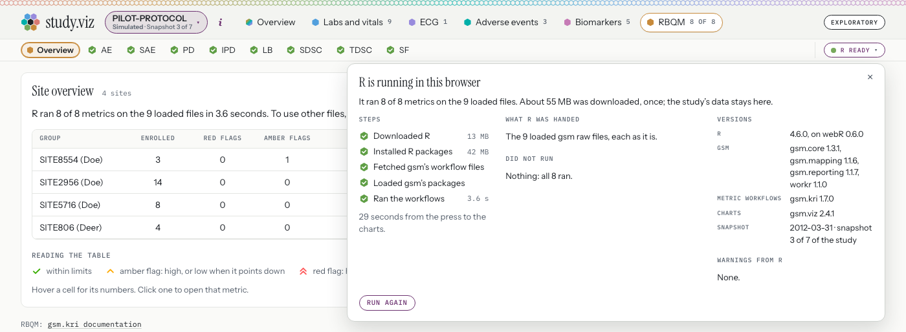
- “Snapshot”: “2012-03-31 · snapshot 3 of 7 of the study”.
A second study, PILOT-PROTOCOL, on the snapshot chosen on its Overview tab, “2012-03-31 · 3 of 7”. The chip then read “Simulated · Snapshot 3 of 7”, and Run details names the snapshot R was given by its date.
- The build said its steps as R took them: “Start R in this browser”, “Install R’s packages”, “Fetch the simulator (a modified copy of gsm.datasim)”, “Simulate the study and build its layers”.
- After Load into the demo the chip read “DEMO-BUILT”, with “Simulated” under it, and its card read “Made by” “a modified copy of gsm.datasim 2.1.0”.
- Times are from one run on one machine. A protocol in the form, and the other order of starting R, are on the safety.viz v1.13.0 demo page.
- Press the chip, ADD A STUDY, then Describe a study. Keep the numbers small and press Build the study.Allow about a minute the first time, while R starts.
- Press Load into the demo, open the RBQM tab and press Start R.The site overview appears in seconds.
How the copy is held to its source
study.viz began as a copy. A copy can drift without anyone noticing, so the repository keeps a record of what was copied and checks it on every change. The capture read the records from the repository at commit beee1a56 and tested two of them itself.
| What | How it is held | Checked by this page |
|---|---|---|
| The app's source, its tests and what they read | 304 files copied from safety.viz at commit 75b918cd. The record, SOURCE.json, lists each with its checksum and size. 39 of the files differ from safety.viz's: the record lists 183 changes in them, each with its reason, such as the name. npm run copied:check fails when a file and the record disagree. | All 304 entries carry a checksum, and every change its reason. 12 of the files were fetched and their checksums worked out again: all matched. In a clone at beee1a56, the command printed: “SOURCE.json: 304 files match their recorded checksums (copied from jwildfire/safety.viz at 75b918c, 39 of them changed by the 183 changes the record lists)”. |
| The charts | No chart's source is in study.viz. The charts are safety.viz's chart bundle from its dev branch at 75b918cd, named 1.13.0: the built file dist/safety.viz-1.13.0/safety.viz.esm.js, copied from the same safety.viz commit as the app's files. npm run safety-viz:check holds the copy to its record. | The copy and safety.viz's own file were both fetched. They are the same 1,567,666 bytes, with the checksum the record names (it begins eaf57ccedb43). |
| The pictures and records left out | 76 files are listed as left out of the record, each with its reason. 67 are the pictures the browser tests are compared with: study.viz draws its own, and most of them show the app's name. 9 are screenshots the demo-path walk writes each time it runs. | Counted in the record. 67 pictures are stored in the repository. |
| study.builder | The copy is its v0.5.2 release, 94 files with a record of their own. | Read from the record. Not compared with study.builder's release. |
| The tests | One check, “Build, format, and test”, runs on every pull request and every change to dev. It runs the unit tests and the browser tests, and on its Linux runner each stored picture is compared with a fresh one. On commit beee1a56 it ran 617 unit tests and 131 browser tests, and all passed (the run). | Not run here. The run's commit and its result were read; the counts are from the run's own log. |
- One safety.viz commit is named: 75b918cd. The app's files and the chart bundle both name it, and the bundle there is byte for byte the copy.
- The record is the proof of the copy, not a lock on the app. The repository says it will be retired once safety.viz no longer carries the app.
- What each release holds, and the commands above, are in study.viz's NEWS, README and CONTRIBUTING.
Limits
- The app's words about starting R stay after R is running (study.viz #19). Captured: after the build had started R, the RBQM tab still read “The site metrics cannot be worked out without R. Start R to run them: about 55 MB, downloaded once. The study’s data stays in this browser.”, and offered Start R. Pressing it made no request to R's own host.
- A reload reopens the pilot study (study.viz #20). Captured: after a reload the chip read “Pilot study”, though DEMO-BUILT was in use before.
- The app carries safety.viz's app at 75b918cd and study.builder v0.5.2, with their known faults: mapping by hand (safety.viz #432) and study.builder's own list (study.builder #1). Not captured here.
- The charts' JavaScript statistics are safety.viz's, unchanged. A ruling on each is awaited (safety.viz #259).
- This page checks no statistic. It shows what the app does, not that a number is right.
- The status panel's line under Qualified reads “Validated for regulated use. Nothing in safety.viz is, yet.” The words come from the chart bundle, so they name safety.viz, not study.viz (section 1).
- The RBQM study is synthetic, and its description in the app does not say so. The chip's list marks it “Demo” (safety.viz #434).
- The file
docs/DATA_SOURCES.mdin study.viz is safety.viz's, copied, and is still written for safety.viz (study.viz #28).
- The tests. They run in the repository's own check. This page ran none of them; the counts are from the check's own run, linked in section 7.
- The other places the app names itself: its console warnings, and the single file that opens from disk with no network. The repository's CONTRIBUTING lists them.
- study.builder's own download buttons, and what a saved file holds. Only the names of the app's own two downloads were read.
- Running it on your own machine with
npm run demo. - Files of your own, building from a protocol, a phone, any window narrower than 1,280 pixels, and any browser but Chromium.
- Whether a result is right. This page shows that the app is the same app under its own name, not that a chart or a simulated study is correct.
The release
- The release notes, section v0.1.0.
- The app: the released app. Work for the next release: the dev site.
- The repository: jwildfire/study.viz.
- The requirement it answers (roadmap #440); the study view in sections (study.viz #16); the copy moved to safety.viz 75b918cd and study.builder v0.5.2 (study.viz #32).
Beside it
- The safety.viz v1.13.0 demo page: what the app does, in detail.
- safety.viz: the charts, their gallery and their docs.
- study.builder: the builder and the study view.